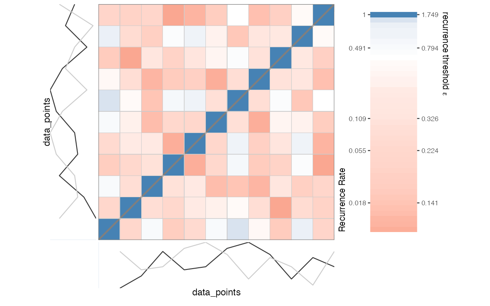
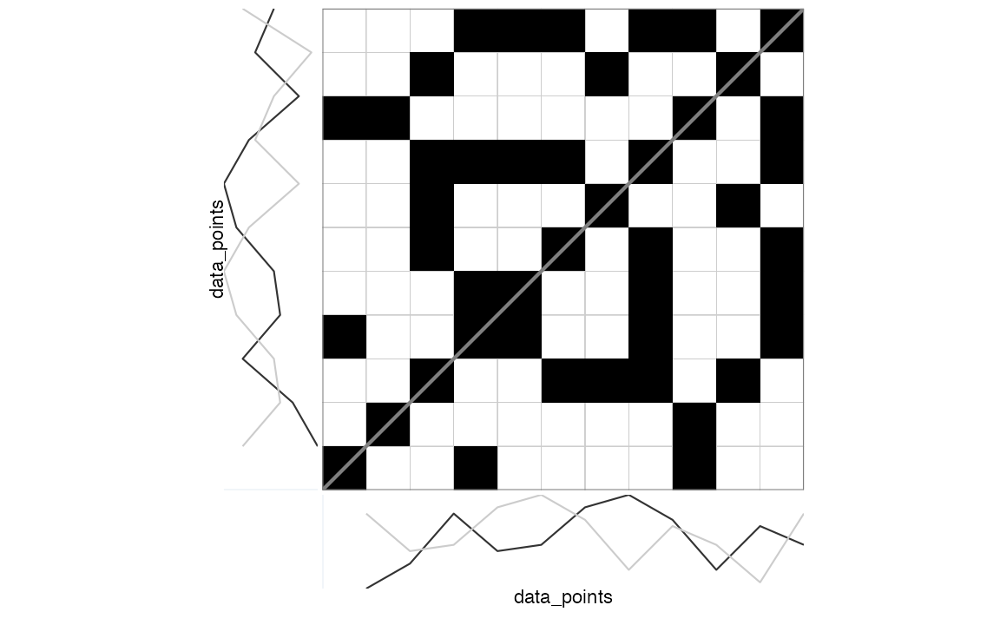

This vignette discusses how to conduct a large variety of
recurrence-based time series analyses using R-package casnet.
It is not the only R package that can run recurrence
analyses, the closest alternative in R to
casnet is probably package crqa.
It has a great tutorial paper by [@coco2014]). Several other packages have
dedicated functions, e.g. package nonlinearTseries has a
function RQA. There are also many options outside of the
R framework, see the Recurrence Plot
webpage for a comprehensive list of software.
There are 3 ways to run Recurrence Quantification Analyses in
casnet:
- Using functions
rp,rp_measuresandrp_plot. These functions use a thresholded distance matrix known as a recurrence plot to calculate RQA measures. Use these functions if your time series length is around2000data points or less. - Using function
rqa_par, which does not construct a distance matrix, but processes matrix diagonals in parallel. The function is very fast and can handle very large time series. - Using function
rqa_clwhich will run Norbert Marwan’s commandline Recurrence Plots. You can run this if your OS allows execution of 32 bit command line executable.
The following examples will demonstrate the basic use of the native
casnet functions based on the rqa_par and
rp families of functions, see the paragraph An R interface to Marwan’s commandline recurrence
plots to learn about using rqa_cl() and An R interface to Marwan’s commandline recurrence
plots.
To learn more about the different types of Recurrence Quantification
Analysis that can be conducted in casnet please see the
chapters on RQA in the Complex Systems Approach book for more
details:
RQA based on a matrix: rp()
Unordered categorical data
emDim <- 1
emLag <- 1
emRad <- 0
theiler <- 0 # Do not include the diagonalContinuous data
We’ll use the examples used in the manual of the PyRQA library for Python.
This is convenient, the parameters emDim,
emLag and emRad are already given (see the CSA
book for examples on how to estimate them with casnet)
and it allows for a comparison of the output.
# PyRQA example data
data_points <- as.numeric(c(0.1, 0.5, 1.3, 0.7, 0.8, 1.4, 1.6, 1.2, 0.4, 1.1, 0.8, 0.2, 1.3))
plot(ts(data_points), type = "b")First, we create a distance matrix based on the (delay embedded) time
series and decide on a threshold criterion to turn it into a recurrence
matrix of 0s and 1s. We already have a radius
given in the PyRQA example, using a convenient graphical tool for visual
inspection of the relationship between different thresholds values and
the resulting recurrence rate (RR), we can check what this
radius will yield.
library(casnet)
emDim <- 2
emLag <- 2
emRad <- 0.65
RM <- rp(y1 = data_points, emDim = emDim, emLag = emLag)
rp_plot(RM, plotDimensions = TRUE, drawGrid = TRUE)
The code below applies the threshold emRad to the
distance matrix, which generates a sparse matrix (class
dgcMatrix, see package [Matrix]).
(RM <- rp(y1 = data_points, emDim = emDim, emLag = emLag, emRad = emRad))> 11 x 11 sparse Matrix of class "dgCMatrix"
>
> [1,] . . . 1 . . . . 1 . .
> [2,] . . . . . . . . 1 . .
> [3,] . . . . . 1 1 1 . 1 .
> [4,] 1 . . . 1 . . 1 . . 1
> [5,] . . . 1 . . . 1 . . 1
> [6,] . . 1 . . . . 1 . . 1
> [7,] . . 1 . . . . . . 1 .
> [8,] . . 1 1 1 1 . . . . 1
> [9,] 1 1 . . . . . . . . 1
> [10,] . . 1 . . . 1 . . . .
> [11,] . . . 1 1 1 . 1 1 . .The relevant analysis parameters, including the embedded series, are stored as attributes of the matrix object.
attributes(RM)> $i
> [1] 3 8 8 5 6 7 9 0 4 7 10 3 7 10 2 7 10 2 9 2 3 4 5 10 0
> [26] 1 10 2 6 3 4 5 7 8
>
> $p
> [1] 0 2 3 7 11 14 17 19 24 27 29 34
>
> $Dim
> [1] 11 11
>
> $Dimnames
> $Dimnames[[1]]
> NULL
>
> $Dimnames[[2]]
> NULL
>
>
> $x
> [1] 1 1 1 1 1 1 1 1 1 1 1 1 1 1 1 1 1 1 1 1 1 1 1 1 1 1 1 1 1 1 1 1 1 1
>
> $factors
> list()
>
> $class
> [1] "dgCMatrix"
> attr(,"package")
> [1] "Matrix"
>
> $method
> [1] "Euclidean"
>
> $call
> proxy::dist(x = et1, y = et2, method = method, diag = TRUE)
>
> $AUTO
> [1] TRUE
>
> $emRad
> [1] 0.65
>
> $NAij
> [1] NA
>
> $theiler
> [1] 1
>
> $emDims1
> tau.0 tau.1
> [1,] 0.1 1.3
> [2,] 0.5 0.7
> [3,] 1.3 0.8
> [4,] 0.7 1.4
> [5,] 0.8 1.6
> [6,] 1.4 1.2
> [7,] 1.6 0.4
> [8,] 1.2 1.1
> [9,] 0.4 0.8
> [10,] 1.1 0.2
> [11,] 0.8 1.3
> attr(,"embedding.dims")
> [1] 2
> attr(,"embedding.lag")
> [1] 2
> attr(,"embedding.time")
> [1] 2
> attr(,"variable.y")
> [1] "data_points"
>
> $emDims2
> tau.0 tau.1
> [1,] 0.1 1.3
> [2,] 0.5 0.7
> [3,] 1.3 0.8
> [4,] 0.7 1.4
> [5,] 0.8 1.6
> [6,] 1.4 1.2
> [7,] 1.6 0.4
> [8,] 1.2 1.1
> [9,] 0.4 0.8
> [10,] 1.1 0.2
> [11,] 0.8 1.3
> attr(,"embedding.dims")
> [1] 2
> attr(,"embedding.lag")
> [1] 2
> attr(,"embedding.time")
> [1] 2
> attr(,"variable.y")
> [1] "y2"
>
> $emDims1.name
> [1] "data_points"
>
> $emDims2.name
> [1] "y2"
>
> $embedded
> [1] TRUE
>
> $emLag
> [1] 2
>
> $emDim
> [1] 2
>
> $measures
> [1] NA
>
> $weighted
> [1] FALSE
>
> $weightedBy
> [1] "si"
>
> $chromatic
> [1] FALSE
>
> $chromaNames
> [1] NA
>
> $chromaDims
> [1] NAIt is custom to represent the recurrence matrix as a plot with
coordinate (1,1) in the left lower corner.
rp_plot(RM, plotDimensions = TRUE, drawGrid = TRUE)
Because this analysis concerns Auto-RQA, the diagonal is usually
excluded from the calculations of RQA measures. This can be achieved by
setting the theiler parameter to 1. This is in
fact the default behavior in casnet if the
theiler argument is NA and the recurrence
matrix is detected to be symmetrical.
# Current value of theiler
attributes(RM)$theiler> [1] 1
# Values on the diagonal
Matrix::diag(RM)> [1] 0 0 0 0 0 0 0 0 0 0 0
# To explicitly include the diagonal in calculations set theiler to 0
(RM <- rp(y1 = data_points, emDim = emDim, emLag = emLag, emRad = emRad, theiler = 0))> 11 x 11 sparse Matrix of class "dgCMatrix"
>
> [1,] 1 . . 1 . . . . 1 . .
> [2,] . 1 . . . . . . 1 . .
> [3,] . . 1 . . 1 1 1 . 1 .
> [4,] 1 . . 1 1 . . 1 . . 1
> [5,] . . . 1 1 . . 1 . . 1
> [6,] . . 1 . . 1 . 1 . . 1
> [7,] . . 1 . . . 1 . . 1 .
> [8,] . . 1 1 1 1 . 1 . . 1
> [9,] 1 1 . . . . . . 1 . 1
> [10,] . . 1 . . . 1 . . 1 .
> [11,] . . . 1 1 1 . 1 1 . 1
attributes(RM)$theiler> NULLIn casnet the theiler correction will
affect all calculations. This is different from, for example,
PyRQA where it only affects the recurrence rate and measures based on
diagonal line structures. Below are the results reported in the online
PyRQA manual, with
the diagonal included:
RQA Result:
===========
Minimum diagonal line length (L_min): 2
Minimum vertical line length (V_min): 2
Minimum white vertical line length (W_min): 2
Recurrence rate (RR): 0.371901
Determinism (DET): 0.411765
Average diagonal line length (L): 2.333333
Longest diagonal line length (L_max): 3
Divergence (DIV): 0.333333
Entropy diagonal lines (L_entr): 0.636514
Laminarity (LAM): 0.400000
Trapping time (TT): 2.571429
Longest vertical line length (V_max): 4
Entropy vertical lines (V_entr): 0.955700
Average white vertical line length (W): 2.538462
Longest white vertical line length (W_max): 6
Longest white vertical line length inverse (W_div): 0.166667
Entropy white vertical lines (W_entr): 0.839796
Ratio determinism / recurrence rate (DET/RR): 1.107190
Ratio laminarity / determinism (LAM/DET): 0.971429The same for casnet:
# Including diagonal
RM <- rp(y1 = data_points, emDim = emDim, emLag = emLag, emRad = emRad, theiler = 0)
out_rqa <- rp_measures(RM, silent = FALSE)>
> ~~~o~~o~~casnet~~o~~o~~~
> Global Measures
> Global Max.points N.points RR Singular Divergence Repetitiveness
> 1 Matrix 110 45 0.409 20 0.333 2
>
>
> Line-based Measures
> Lines N.lines N.points Measure Rate Mean Max. ENT ENT_rel CoV
> 1 Diagonal 6 14 DET 0.311 2.33 3 0.637 0.265 0.221
> 2 Vertical 5 14 V LAM 0.311 2.80 4 1.055 0.440 0.299
> 3 Horizontal 5 14 H LAM 0.311 2.80 4 1.055 0.440 0.299
> 4 V+H Total 10 28 V+H LAM 0.311 2.80 4 1.055 0.440 0.282
>
> ~~~o~~o~~casnet~~o~~o~~~Below is a comparison of the output from casnet::rp()
and PyRQA. Note that PyRQA includes the main
diagonal for RR and measures based on vertical (and
horizontal) lines.
| RR | 0.409091 | 0.309091 | 0.371901 | Yes |
| DET | 0.311111 | 0.411765 | 0.411765 | No |
| MAX_dl | 3.000000 | 3.000000 | 3.000000 | No |
| MEAN_dl | 2.333333 | 2.333333 | 2.333333 | No |
| ENT_dl | 0.636514 | 0.636514 | 0.636514 | No |
| LAM | 0.311111 | 0.411765 | 0.400000 | Yes |
| MAX_vl | 4.000000 | 4.000000 | 4.000000 | Yes |
| MEAN_vl | 2.800000 | 2.800000 | 2.571429 | Yes |
| ENT_vl | 1.054920 | 1.054920 | 0.955700 | Yes |
RQA based on massively parallel processing:
rqa_par()
PyRQA was developed to perform RQA on very long time
series, without overloading memory and inflating the computing time to a
degree that is unmanageable in a regular workflow. It is not recommended
to use matrix based functions like casnet::rp_measures() on
time series larger than 5,000 data points, instead,
casnet::rqa_par() can be used, which implements some of the
methods used in PyRQA. Specifically, the memory management
by limiting the precision (package [float]) and using bit compression
(package [float]), as well as by computing RQA measures in a massively
parallel way (package [parallel]). Compared to
casnet::rqa_par(),PyRQA is still faster, but
this difference becomes noticeable for very large time series
(>100,000).
noise <- casnet::noise_powerlaw(N=10000, seed = 1234)
plot(ts(noise),type = "l")
#est_radius_rqa(ts_embed(noise, emDim = emDim, emLag = emLag), noise, AUTO = TRUE)RQA Result:
===========
Minimum diagonal line length (L_min): 2
Minimum vertical line length (V_min): 2
Minimum white vertical line length (W_min): 2
Recurrence rate (RR): 0.049585
Determinism (DET): 0.230880
Average diagonal line length (L): 2.149236
Longest diagonal line length (L_max): 7
Divergence (DIV): 0.142857
Entropy diagonal lines (L_entr): 0.443727
Laminarity (LAM): 0.374149
Trapping time (TT): 2.305511
Longest vertical line length (V_max): 8
Entropy vertical lines (V_entr): 0.709903
Average white vertical line length (W): 28.154700
Longest white vertical line length (W_max): 9079
Longest white vertical line length inverse (W_div): 0.000110
Entropy white vertical lines (W_entr): 3.909756
Ratio determinism / recurrence rate (DET/RR): 4.656240
Ratio laminarity / determinism (LAM/DET): 1.620535
# Including diagonal
# emRad <- est_radius(rp(noise,emDim = emDim, emLag = emLag))
emLag <- 100
emDim <- 2
emRad <- .00018
out_rqa_par <- casnet::rqa_par(y1 = noise, AUTO = TRUE, emDim = emDim, emLag = emLag, emRad = emRad, silent = FALSE, theiler = 0)>
> ~~~o~~o~~casnet~~o~~o~~~
> Global Measures
> Global Max.points N.points RR Singular Divergence Repetitiveness
> 1 Matrix 9.8e+07 4859832 0.0496 3730180 0.000101 3.22
>
>
> Line-based Measures
> Lines N.lines N.points Measure Rate Mean Max. ENT ENT_rel CoV
> 1 Diagonal 521001 1129652 DET 0.232 2.17 9900 0.444 0.0482 6.327
> 2 Vertical 788676 1818301 V LAM 0.374 2.31 8 0.710 0.0772 0.269
> 3 Horizontal 788676 1818301 H LAM 0.374 2.31 8 0.710 0.0772 0.269
> 4 V+H Total 1577352 3636602 V+H LAM 0.374 2.31 8 0.710 0.0772 0.269
>
> ~~~o~~o~~casnet~~o~~o~~~| RR | 0.049585 | 0.049489 | 0.049585 | Yes |
| DET | 0.232447 | 0.230880 | 0.230880 | No |
| MAX_dl | 9900.000000 | 7.000000 | 7.000000 | No |
| MEAN_dl | 2.168234 | 2.149236 | 2.149236 | No |
| ENT_dl | 0.443753 | 0.443727 | 0.443727 | No |
| LAM | 0.374149 | 0.373418 | 0.374149 | Yes |
| MAX_vl | 8.000000 | 8.000000 | 8.000000 | Yes |
| MEAN_vl | 2.305511 | 2.304642 | 2.305511 | Yes |
| ENT_vl | 0.709903 | 0.708647 | 0.709903 | Yes |
An R interface to Marwan’s commandline recurrence plots
IMPORTANT: Currently
rp_clcan only run on an operating system that allows execution of 32-bit applications!
The crqa_cl() function is a wrapper for the commandline
Recurrence Plots executable provided by Norbert Marwan.
The rp executable file is installed on your machine when
the function rp_cl() is called for the first time:
- It is renamed to
rpfrom a platform specific file downloaded from the commandline Recurrence Plots site. - The file is copied to the directory:
normalizePath("[path to casnet]/exec/",mustWork = FALSE)- Make sure that you have rights to execute programs in this directory!
- The latter location is stored as an option and can be read by
calling
getOption("casnet.path_to_rp")
If you cannot change the permissions on the folder where
rp was downloaded, consider downloading the appropriate
executable from the commandline
Recurrence Plots site to a directory in which you have such
permissions. Then change the path_to_rp option using
options(casnet.path_to_rp="YOUR_PATH_TO_RP"). See the
manual entry for rp_cl() for more details.
The platform specific rp command line executable files
were created by Norbert Marwan and obtained under a Creative Commons
License from the website of the Potsdam Institute for Climate Impact
Research at: http://tocsy.pik-potsdam.de/
The full copyright statement on the website is as follows:
© 2004-2017 SOME RIGHTS RESERVED
University of Potsdam, Interdisciplinary Center for Dynamics of Complex Systems, Germany
Potsdam Institute for Climate Impact Research, Transdisciplinary Concepts and Methods, Germany
This work is licensed under a Creative Commons Attribution-NonCommercial-NoDerivs 2.0 Germany License.
More information about recurrence quantification analysis can be found on the Recurrence Plot website.
Computational load: The Python solution [PyRQA]
When the time series you analyze are very long, the recurrence matrix
will become very large and R will become very slow. One solution is to
use R to run the Python program PyRQA or perhaps
pyunicorn.
The options for PyRQA are limited compared to the casnet
functions, but the gain in processing speed is remarkable!
What follows is an example of how you could make PyRQA
run in R using the package reticulate.
Setup the environment
Suppose you are on a machine that has both R and
Python installed then the steps are:
- Make sure
Pythonandpipare up to date - Create a virtual (or a coda) environment.
- Install
PyRQAinto the virtual environment.
You should only have to create and setup the environment once.
library(reticulate)
# OS requirements
# Python3.X is installed and updated.
# On MacOS you'll probably need to run these commands in a Terminal window:
python3 pip install --update pip # Updates the Python module installer
python3 pip intall pyrqa # Installs the pyrqa module on your machine
# First make sure you use the latest Python version
# You can check your machine by calling: reticulate::py_discover_config()
reticulate::use_python("/usr/local/bin/python3")
# Create a new environment "r-reticulate", the path is stored in vEnv
# On Windows use coda_create() see the reticulate manual.
vEnv <- reticulate::virtualenv_create("r-reticulate")
# Install pyrqa into the virtual environment
reticulate::virtualenv_install("r-reticulate","pyrqa")
# If you wish to remove the environment use: reticulate::virtualenv_remove("r-reticulate")After the environment is set up:
- Restart your R session and instruct the system to use Python in the virtual environment.
- Import
PyRQAinto yourRsession. - Use the
PyRQAfunctions that are now available as fields ($) of the imported object!
An important thing to note in the example below is the use of
as.integer() to pass integer variables to Python.
# Make sure you associate reticulate with your virtual environment.
reticulate::use_virtualenv("r-reticulate", required = TRUE)
# Import pyrqa into your R session
pyrqa <- reticulate::import("pyrqa")
# Alternatively, you can import from a path in the virtual environment.
# On MacOS this will be a hidden folder in your home directory:
# '.virtualenvs/r-reticulate/lib/Python3.X/site-packages'
# pyrqa <- import_from_path(file.path(vEnv,"/lib/python3.9/site-packages"))
# Now perform RQA on your N = 10,000 time series!
Y <- cumsum(rnorm(10000))
# Automated parameter search will still take some time using casnet
system.time({
emPar <- casnet::est_parameters(Y, doPlot = FALSE)
emRad <- casnet::est_radius(y1 = Y, emLag = emPar$optimLag, emDim = emPar$optimDim)
})
# user system elapsed
# 299.732 89.094 393.620
# About 5 minutes to find a delay, embedding dimension and radius yielding 5% recurrent points.
# Now do an RQA on the 10,000 x 10,000 matrix using Python
system.time({
time_series <- pyrqa$time_series$TimeSeries(Y,
embedding_dimension= as.integer(emPar$optimDim),
time_delay= as.integer(emPar$optimLag))
settings <- pyrqa$settings$Settings(time_series,
analysis_type = pyrqa$analysis_type$Classic,
neighbourhood = pyrqa$neighbourhood$FixedRadius(emRad$Radius),
similarity_measure = pyrqa$metric$EuclideanMetric,
theiler_corrector = 0)
computation <- pyrqa$computation$RQAComputation$create(settings)
result <- computation$run()
})
# user system elapsed
# 2.996 0.069 0.365
# About 3 seconds for the analysis...
# That's really fast!
print(result)RQA Result:
===========
Minimum diagonal line length (L_min): 2
Minimum vertical line length (V_min): 2
Minimum white vertical line length (W_min): 2
Recurrence rate (RR): 0.050090
Determinism (DET): 0.955821
Average diagonal line length (L): 10.634044
Longest diagonal line length (L_max): 9866
Divergence (DIV): 0.000101
Entropy diagonal lines (L_entr): 3.064460
Laminarity (LAM): 0.969709
Trapping time (TT): 14.930102
Longest vertical line length (V_max): 345
Entropy vertical lines (V_entr): 3.386939
Average white vertical line length (W): 265.518914
Longest white vertical line length (W_max): 9161
Longest white vertical line length inverse (W_div): 0.000109
Entropy white vertical lines (W_entr): 4.726210
Ratio determinism / recurrence rate (DET/RR): 19.081989
Ratio laminarity / determinism (LAM/DET): 1.014530You can also save the Recurrence Plot.
RPcomputation <- pyrqa$computation$RPComputation$create(settings)
RPresult <- RPcomputation$run()
pyrqa$image_generator$ImageGenerator$save_recurrence_plot(RPresult$recurrence_matrix_reverse,'recurrence_plot_python.png')
knitr::include_graphics("recurrence_plot_python.png")
RP produced by PyRQA
Other options: Julia
The Julia software has a number of very powerful packages to simulate and analyze dynamical systems, see: https://juliadynamics.github.io/DynamicalSystems.jl/latest/
You can perform RQA (https://juliadynamics.github.io/DynamicalSystems.jl/latest/tutorial/#State-space-sets), but perhaps more interestingly, you can use a powerful automatic parameter selection algorithm for embedding called PECUZAL: https://juliadynamics.github.io/DelayEmbeddings.jl/stable/unified/
I use the freely available software Visual Studio Code to write and run Python (https://code.visualstudio.com/docs/languages/python) and Julia (https://code.visualstudio.com/docs/languages/julia)